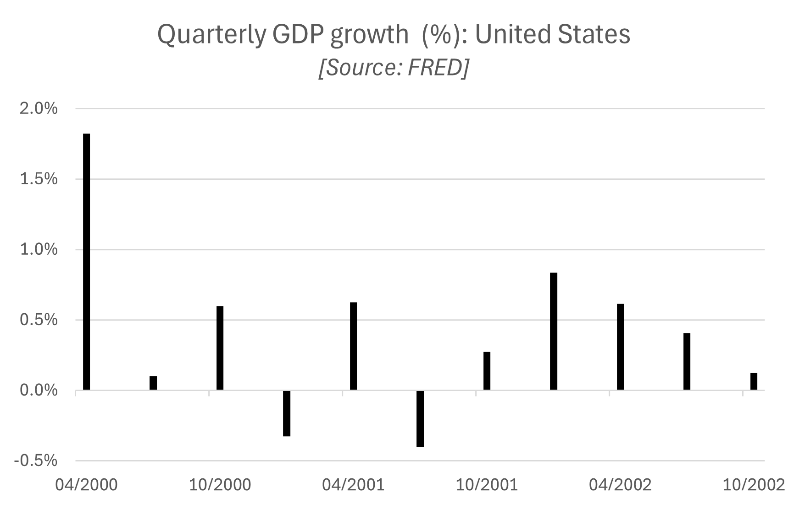
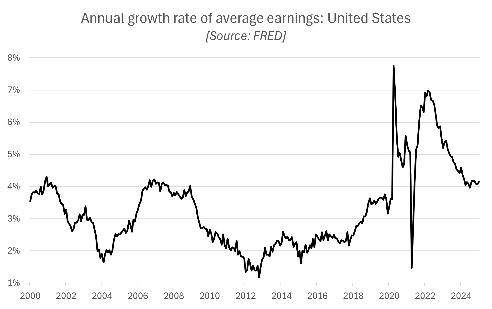
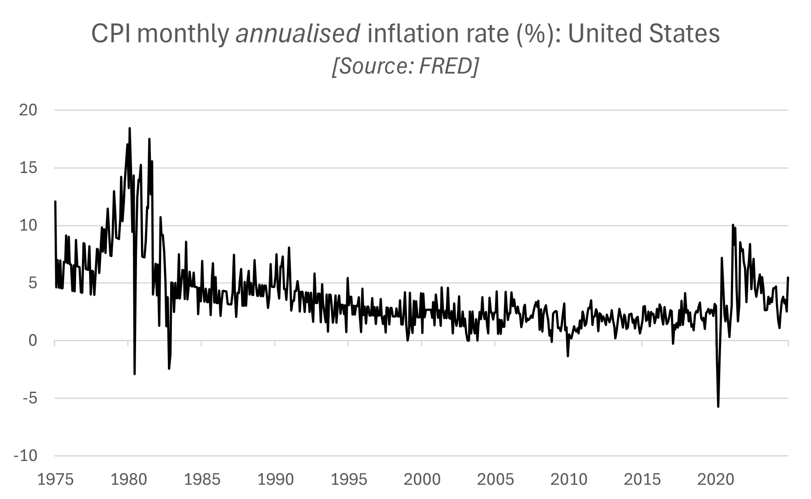
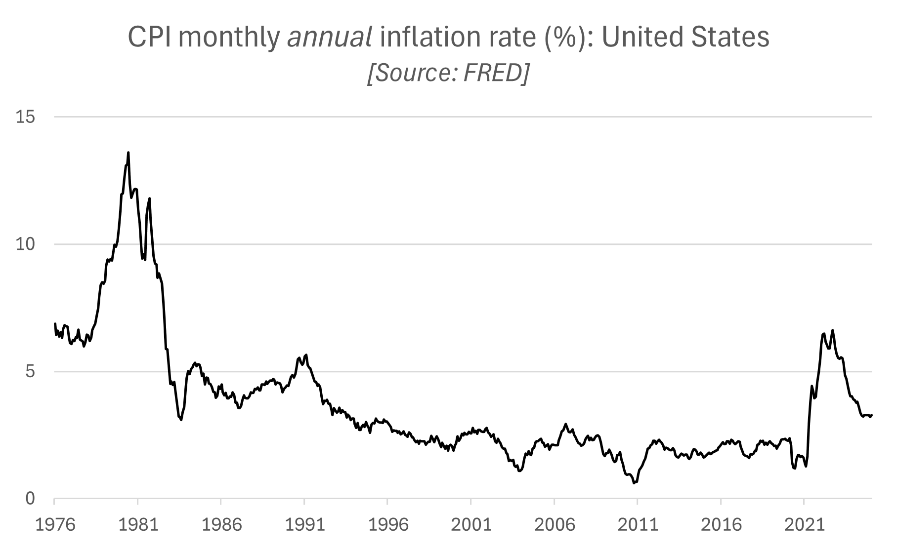
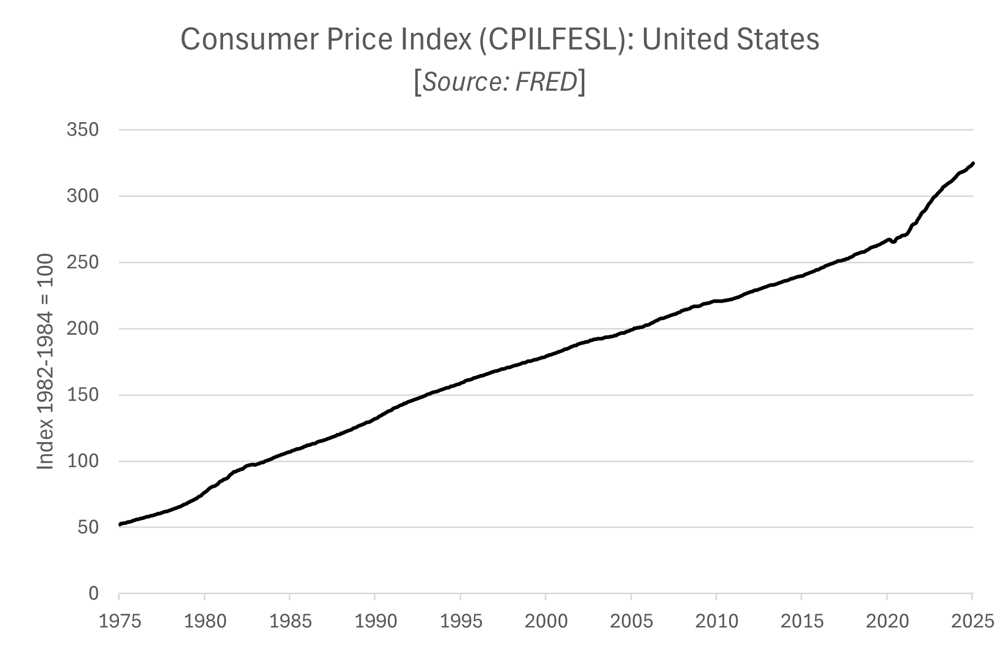
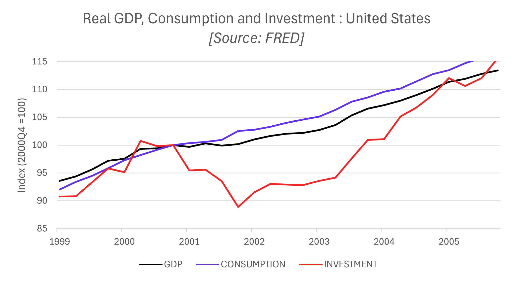
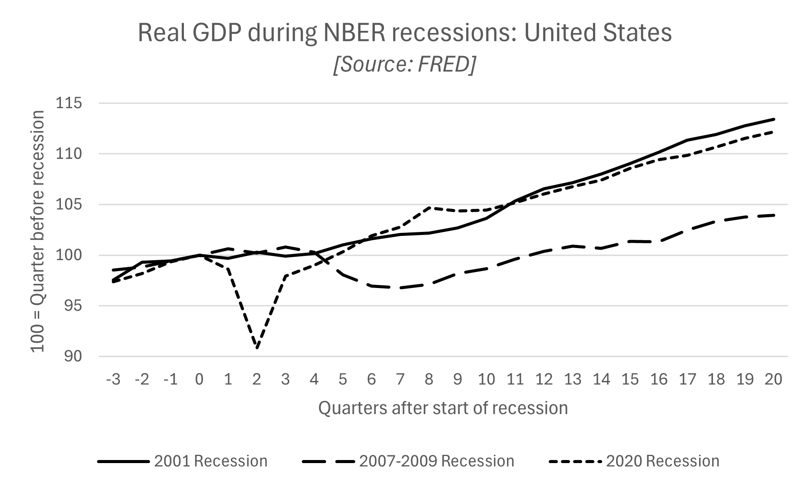

Chapter 5 Business cycle fluctuations
By the end of this chapter, you should be able to:
- Download data from widely available statistical databases.
- Interpret index series (Price indices, Industrial production indices, …) and construct indexed variables
- Construct annual growth rates of monthly or quarterly series to produce smooth series that are easier to interpret.
- Identify recessions using macroeconomic data and understand the issues and limitations associated with such an exercise.
- Use this knowledge to collect data and the appropriate data plots to describe a business cycle event.
5.1 Introduction
Economic events of significance at the macroeconomic level generally involve developments occurring simultaneously in three markets, the market for goods, the labour market and the financial market. Equilibrium in each of these markets determines both the quantities produced and purchased and their prices, the changes of which are tracked by national statistical agencies to inform policymakers and are widely commented in the financial press.
- Goods market: the quantities are the consumption and investment goods and services that form GDP (on the expenditure side) and the associated price is the aggregate price level (which determines the inflation rate).
- Labour market: the quantity is the amount of labour employed (and the amount of labour that is not employed or the unemployment rate) and the associated price is the wage that is offered as a compensation for labour effort.
- Financial market: the quantity is the quantity of credit (and saving or lending) and its price is the cost of borrowing or the interest rate.
Macroeconomic models of short-term business cycle fluctuations such as the 3-equation model developed in Carlin and Soskice (2015) attempt to explain the simultaneous change in each of these (endogenous) variables following (exogenous) shocks.
5.2 Describing the business cycle
5.2.1 Definitions
The diagram below represents the hypothetical path taken by GDP around its long-run trend at the business cycle frequency.

Figure 5.1: Business cycle diagram
- Potential output: long-run trend in output, which may also characterise the medium-run equilibrium output, consistent with equilibrium in the labour market.
- Output gap: deviation of actual from potential output (sometimes expressed as a %).
- Recessions and expansions: periods of decline or rise in economic activity.
- Peak: positive deviations from trends or expansions culminate in peaks, the turning point just before a recession.
- Trough: negative deviations from trends or recessions culminate in troughs, the turning point just before an expansion.
- Depth or amplitude of fluctuations: maximum deviation from trend (either negative or positive) during recessions and expansions.
- Frequency of cyclical fluctuations: number of peaks in GDP over a year.
The plot below represents both the level of real GDP (black line, left axis) and its annual growth rate (green line, right axis) in the United States between 1945 and 2025. The shaded grey areas represent recessions (NBER).

Figure 5.2: US Real GDP: level and annual growth rate (quarterly data)
Several observations regarding the shape of the US business cycles emerge from the plot:
- The level of real GDP exhibits a steady increase over the 80 years. However the long-run trend is irregular, with periods of acceleration (late 1990s, mid-2000s, ..) and periods of stagnation (early 2000s, early 2010s, …).
- Recessions represent short-lived deviations around the long-run trend. These deviations span several months or quarters. In other words, they are persistent, making short-term predictions relatively easier (low growth in one quarter tends to be associated with low growth in the next quarter).
- Recessions and expansions are associated with sharp swings in real GDP growth, especially before the mid-1980s. The sharp swings that characterise turning points (peaks and troughs) suggest they are relatively unpredictable.
- The amplitude of business cycle fluctuations varies over time: GDP fell by up to 4% per year during the 2007-2009 recessions, up to 8% during the Covid pandemic, but did not fall during the 2001 recession.
- The frequency of fluctuations appears also to be irregular. The length of time between peaks and troughs of the business cycle (and therefore between recessions) varies over time and increased over the last 30 years.
Although there are some regularities, each period of recession and expansion has therefore its specificity. Understanding these similarities and differences can provide useful insights into the causes of business cycle fluctuations as well as the role and effectiveness of macroeconomic policies. Any study of business cycle events starts with a description grounded in observations of macroeconomic data.
5.2.2 Identifying recessions
There is not one method of identifying recessions. In this section, we discuss various approaches to identify recessions.
One commonly used definition in the financial press is that of two consecutive quarters of negative growth. This definition provides a useful starting point to identify recessions as it is easily implementable, requiring only data on quarterly real GDP:
- Collect quarterly real GDP data.
- Calculate the quarterly growth rate of real GDP using the formula defined in Section 1.2.1: \[g_{GDP}= \frac{GDP_t}{GDP_{t-1}}-1\]
- Identify quarters where GDP growth is negative for two consecutive quarters (6 months). Conclude that the economy was in a recession during these quarters only.
In practice, there will be marginal cases where this method identifies false positives, ie periods of relative stagnation for two quarters when GDP falls but by a relatively small amount and without a widespread fall in activity across all sectors of the economy. Conversely, this method may fail to identify recessions when a quarter of negative growth occurs in between two quarters of negative growth, even though the event is associated with a large fall in economic activity and / or has a persistent effect on the labour market.

For example, using this method, we would fail to identify a recession in 2001 in the United States as GDP growth was negative in the first and third quarters of 2001 but not in the second quarter.
However, according to a committee of experts assembled into the NBER’s Business Cycle Dating Committee, the US economy was in recession between the first and the thrid quarter of 2001. Here is how the National Bureau of Economic Research (NBER) defines recessions and expansions:
Q: What is a recession? What is an expansion?
A: The NBER’s traditional definition of a recession is that it is a significant decline in economic activity that is spread across the economy and that lasts more than a few months. The committee’s view is that while each of the three criteria — depth, diffusion, and duration — needs to be met individually to some degree, extreme conditions revealed by one criterion may partially offset weaker indications from another. For example, in the case of the February 2020 peak in economic activity, we concluded that the drop in activity had been so great and so widely diffused throughout the economy that the downturn should be classified as a recession even if it proved to be quite brief. The committee subsequently determined that the trough occurred two months after the peak, in April 2020. An expansion is a period when the economy is not in a recession. Expansion is the normal state of the economy; most recessions are brief. However, the time that it takes for the economy to return to its previous peak level of activity may be quite extended.
Q: What indicators does the committee use to determine peak and trough dates?
A: The determination of the months of peaks and troughs is based on a range of monthly measures of aggregate real economic activity published by the federal statistical agencies. These include real personal income less transfers (PILT), nonfarm payroll employment, real personal consumption expenditures, manfacturing and trade sales adjusted for price changes, employment as measured by the household survey, and industrial production. There is no fixed rule about what measures contribute information to the process or how they are weighted in our decisions.
Source: NBER Frequently Asked Questions.
Note: key terms in bold have been highlighted by us.
Thus the committee, in addition to real GDP, looks at a wider range of measures of economic activity spanning both the goods market and the labour market. To investigate further the fluctuations in economic activity that occurred in the US economy in 2001, we look at changes in the unemployment rates and in real earnin in the two figures below.


Although more subdued than for the other two recessions over this sample period, we do observe a significant rise in the unemployment rate and a significant fall in the growth rate of earnings in 2001 in the United States, suggesting the slowdown in economic activity was relatively widespread and affected the labour market disproportionately more. These developments in the labour market can be used to motivate the classification of the event as a recession.
5.3 Collecting macroeconomic data
In this section, we present four important sources of macroeconomic data for OECD economies which are freely available by government institutions and international organisations.
Here are a few things to consider before collecting data:
- Real variables are expressed at constant prices (usually “Chained”) whereas nominal variables are expressed at current prices. To describe the level of economic activity, we are usually interested in real quantities (eg real GDP, real consumption, real investment, …). However, it is possible to compare the behaviour of two variables over time using nominal variables.
- Whenever possible, select seasonally adjusted data: seasonal patterns (eg increased spending around Christmas) have been removed to make it easier to observe business cycle fluctuations.
- Frequency of data: business cycle events develop over months and quarters, it is therefore preferable to use quarterly or monthly data to describe them precisely.
5.3.1 FRED
The Federal Reserve Bank of Saint-Louis in the United States makes available a wealth of macroeconomic data for economies around the world via the Federal Reserve Economic Data (FRED) website: FRED Website
Country specific data can be accessed via this page: FRED Website: Countries
Note that the number of variables available for each country may vary.
Example: Japan Real GDP
The FRED database contains 2400 time series variables for Japan.

Selecting seasonally adjusted quarterly real GDP data for Japan lands us on the page below, where the sample period can be adjusted. To download the data into an Excel spreadsheet, click on “Download” and select “Excel (data)”:

You may choose the “Edit Graph” options to make some simple transformations “Units” (change the level of real GDP into the quarterly or the annual growth rate) and “Frequency” of the data.

5.3.2 OECD
The OECD Data Explorer can be accessed via the following website: OECD Website

Example: Japan (hourly earnings)
As an example, let’s select the “Employment” category and go to “Benefits, earnings and wages”. Then scroll down and select “Hourly earnings”.

In the “Reference area” write / select “Japan”.

In “Frequency of observations & Time period” leave the “Last” cell blank, select “Table” to visualise the series available. If you are happy with the data selected, download it in Excel format.

5.3.3 IMF
To access International Financial Statistics compiled by the International Monetary Fund (IMF): IMF Data portal Website
Leave the “Search IMF Data” box blank and click on “SEARCH”:

Example: Japan (industrial production)
Select “Japan” in the “Country” category, “Industrial Production”, in the “Topic” category, and “Production indexes (PI) in the”Datasets” category:

The result of the search is that to find data on Industrial production in Japan we need to access the Production Indexes (PI) dataset. Clicking on the dataset, and then on “VIEW DATA”:

Selecting “Japan”, “Quarterly” frequency, “All” periods and downloading the data:

5.3.4 Other useful sources of data
- The World Bank website may provide additional information to complement the (at the annual frequency only): World Bank Open Data Website
To collect data for a specific country, click on “Country”:

To download all the data available for the country of your choice (eg Japan), you can download the full dataset as an Excel spreadsheet:

- National statistical agencies, such as the ONS in the United Kingdom, may provide valuable sources of information.
- Government institutions (Central Bank, Parliament, …), such as the Bank of England in the United Kingdom or the Ministry of Finance in Japan, may also make freely available historical data on their website.
5.4 Data manipulations
Data plots are used by economists to describe and compare the behaviour of different macroeconomic variables over the business cycle. In this section, we discuss some basic data manipulations that help convey meaningful information in data plots.
5.4.1 Frequency and data smoothing
Frequency
When describing business cycle fluctuations, we are interested in monthly fluctuations in macroeconomic variables rather than their annual fluctuations. Most economic data used to describe business cycle fluctuations is collected at the quarterly (GDP and its components) or monthly (CPI, industrial production, unemployment rate, interest rates, …) frequency. Some data is also collected at weekly (eg unemployment claims) or daily frequencies (some financial variables). We will focus on monthly and quarterly data in this chapter because these our the most pertinent frequencies for the purpose of our exercise. Note that a quarter corresponds to a period of three months.
Smoothing data
We have already discussed in Section 5.3 how it is preferable to collect seasonally adjusted data if we are interested in business cycle fluctuations. This data is constructed by employing a smoothing technique; removing the seasonal pattern which is associated with sharp changes in macroeconomic variables from one month to the next leads to a smoother data series. However, even after removing the seasonal component of a series, it may still be difficult to observe the trend in macroeconomic variables over the business cycle.
To make comparisons more effective, it is usual to represent economic data in annual terms. Even if we use data (eg CPI inflation rate, GDP growth rate) at the monthly or quarterly frequency, we might want to express it in annualised terms (the rate at which a monthly or quarterly variable would have grown had it continued to grow at the same rate for a year). For example, using the monthly values of the CPI index, we calculate the monthly annualised inflation rate, ie the annual rate of inflation if the CPI were to grow at the same rate as in the current month for 12 months. See here for a more detailed discussion on annualising data.
The plot below represents the monthly annualised CPI inflation rate in the United States: \[\pi_{CPI}^{annualised} = \left[\left( \frac{CPI_t}{CPI_{t-1}}\right)^{12} -1\right]\times 100 \]

The monthly inflation rate tends to be volatile, making it hard for the main trend to emerge at the monthly frequency. To obtain a clearer picture of the changes in the aggregate price level, we can calculate the annual inflation rate at the monthly frequency (ie the percentage change in the CPI between the current month and the same month the year before). \[\pi_{CPI}^{annual} = \left[\left( \frac{CPI_t}{CPI_{t-12}}\right) -1\right]\times 100 \] The monthly annual inflation rate is represented in the plot below. The plot of the annual inflation rate is smoother, making it easier to observe the trends in inflation on a monthly basis.

Similarly, it will be more effective to create a “smooth” plot of the growth rate of GDP, usually observed at a quarterly frequency, by representing the quarterly annual growth rate of GDP constructed as: \[ g_{GDP}^{annual} = \left[\left( \frac{GDP_t}{GDP_{t-4}}\right) -1\right]\times 100 \]
In practice, other advanced methods are used by economists to smooth data series (such as using moving averages).
5.4.2 Indices and indexed variables
Interpretation
An index number is a data point that measures the value of a variable relative to a reference period, referred to as the base period and usually set equal to 100. Many macroeconomic variables tracking changes in quantities or prices of composite objects (eg cost of living, industrial production) and constructed by national statistical agencies and international institutions, take the form of indices. For example, headline measures of inflation are derived from Consumer Price Indices (CPI), Producer Price Indices, Retail Price Indices or the GDP deflator. Indices of industrial production, house price indices and stock price indices are other widely used measures of macroeconomic activity.

The plot above represents one measure of the CPI in the United States, a measure of the cost of living as experienced by the average household, based on a fixed basket of consumption goods and services. The value of the CPI in January 2025 is equal to 324.739. It means that between 1983 (base period) and January 2025 the cost of living for the average household in the United States has increased by 324.7%. As we saw in the previous section, the Consumer Price Index can also be used to construct the rate of change in prices between any two time periods.
Indexing macroeconomic variables to a common starting point
To get a better understanding of the significance of economic events, it may not only be useful to follow what happens to important macroeconomic variables (eg GDP) independently, but to compare what happened to these variables relative to others within the same economy (eg consumption relative to investment, stock price index and dividend payments) or relative to the same variable in a different economy (eg GDP in the United Kingdom relative to GDP in the United States).
The variables we might want to compare may be of different order of magnitude. For example, investment is much smaller than consumption, GDP in the United Kingdom is smaller that GDP in the United States. To better compare relative changes in variables of different magnitude, a widely used method is to index two (or more) variables to a common base period, so that all variables are equal to 100 in the base period and the new variables represent the change in the variables relative to the base period.
For example, to compare the relative changes in GDP, consumption and investment in the United States during the 2001 recession using quarterly data, we would set the base period in the quarter preceding the start of the recession (2000Q4), so that each observation would give the level of consumption and investment in each quarter relative to their level just before the start of the recession.
To index a variable \(X\) to a base period \(t_0\) (= base period) so that the indexed variable is equal to 100 in the base period, apply the following equation: \[X_t^{index}=\frac{X_t}{X_0 } × 100\]
The relevant base period to select depends on the questions that need to be addressed and therefore on the focus of the analysis.
See here for a more detailed discussion on indexing variables.
Example 1: GDP, consumption and investment during the 2001 US recession
The plot below represents the change in real GDP, real consumption and real investment in the United States around the 2001 recession. All three variables have been indexed to the fourth quarter of 2000, which is the quarter just before the start of the recession (2001Q1-2001Q3), ie the peak of the previous expansion.

Because we have indexed the variables to the quarter just before the recession, the plot allows us to address three types of questions: By how much did the level of each variable fall (ie what was the depth of the recession)? How long did it take for each variable to start growing at their trend (pre-recession) rate again? How long did it take for the level of each variable to rise back to their pre-recession level?
Real GDP stagnated for 4 quarters between the fourth quarter of 2000 and the fourth quarter of 2001. Although it then started rising again, it took two more years for GDP to start rising at its pre-recession rate. Real consumption stagnated for 3 quarters between the fourth quarter of 2000 and the third quarter of 2001. Consumption grew at a faster rate than GDP starting in the fourth quarter of 2001. Real investment declined by slightly more than 10% between 2000Q4 and 2001Q4. It took six more quarters for investment to start rising again at the pre-recession rate and two more years for investment to rise back to its pre-recession level.
Example 2: comparing changes in GDP during the last three US recessions
Instead of comparing the relative changes of different variables over the same period of time, we could compare the behaviour of GDP during different recessions that occurred in different periods or countries. The plot below represents the change in real GDP in the US during the last three recessions relative to the quarter just before the start of the recessions (period 0).

The 2020 recession saw the largest and fastest deep in real GDP. The trough of the recession occured in the second quarter, by which time real GDP had fallen by 10% relative to its pre-recession level. The 2007-2009 recession had the longest impact on the level of real GDP, which only recovered its pre-recession level 12 quarters (3 years) after the start of the recession. By the time the recession had reached its trough, seven quarters into the recession, real GDP had fallen by 3.2% relative to its pre-recession level. The 2001 recession was the mildest in terms of real GDP loss. It only fell by 0.3% relative to pre-recession level in the firts qurter of the recession. However, compared to the 2020 recession, it was followed 8-9 quarters of weak growth.